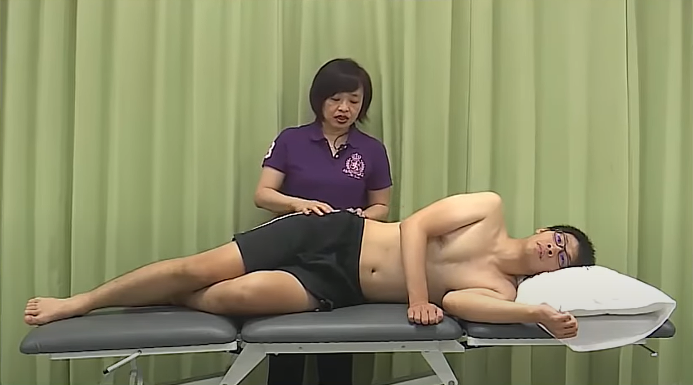
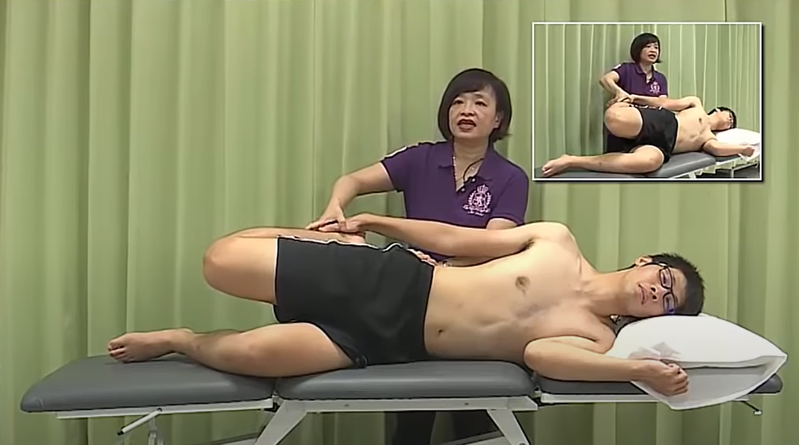
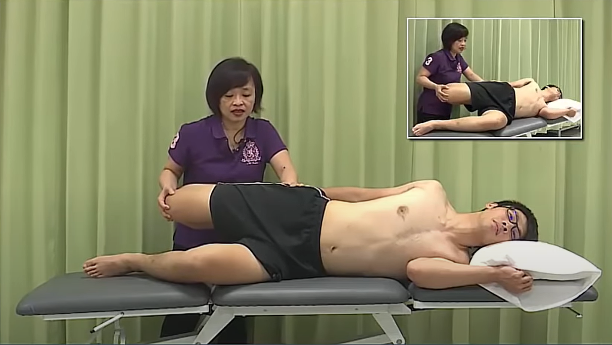
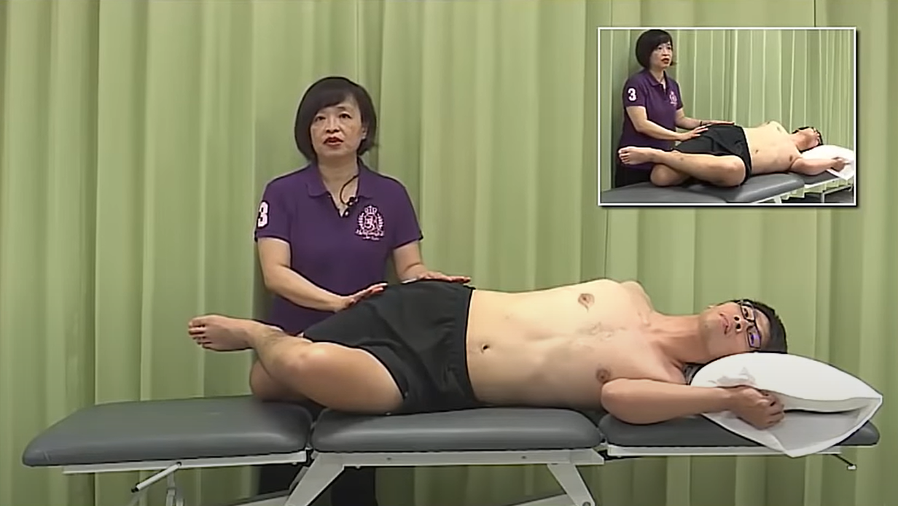

髂脛束拉筋
相關症狀
- 大腿前外側疼痛與膝痛，可能向上痛到髖關節處，亦可能向下傳到小腿肚，患者明顯走路速度變慢，無法於單腳站立維持骨盆水平，或無法側睡在患側之上
誘痛因子
- 快速行走、足前旋者進行上下坡跑步導致肌肉過勞、久坐導致髂屈肌偏弱用力不易、臀部肌肉偏弱(臀大肌、臀中肌、髂腰肌)導致闊筋膜張肌過度使用
操作辦法
- 1. 正中側臥姿，患側在上，健側髖膝屈曲以穩定骨盆 
- 2. 屈膝，患側手握踝上，進行臗外展 
- 3. 髖關節伸直到底
- 4. 髖關節內收 
- 5. 好腳勾在膝上，幫忙出力 